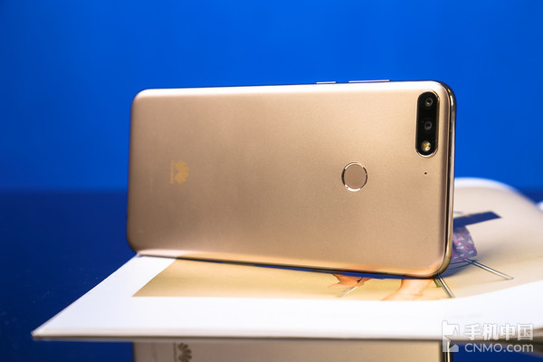
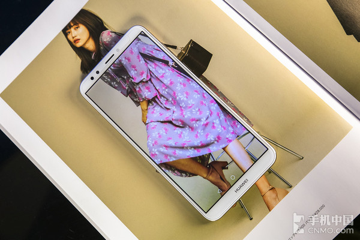
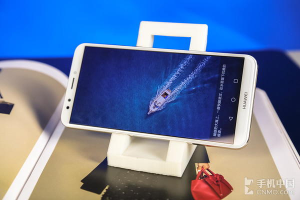

华为畅享8评测：属于年轻人的最佳玩伴
- 孔六六
- 2018-03-29 14:44
- Hits:145
【手机中国 评测】3月29日，华为畅享8携其他两款机型一同亮相于西安交大思源体育馆。
定位于年轻群体的畅享系列给消费者带来了诚意满满的体验，也正因为此，畅享在华为诸多产品线中有着重要的战略意义。而3月29日发布的这款华为畅享8，似乎将“值”这个字诠释的更加细致入微。
全面屏、双摄、人脸识别，这三个词同时出现往往意味着高价、旗舰。那么同时拥有上述功能的华为畅享8又会否以千元价格为我们带来高端享受呢？下面就在实际体验过程中一起寻找答案吧。
手感没谁了
虽说是一款千元机，但华为畅享8显然沿袭了该系列的一贯作风，在设计与工艺方面丝毫没有妥协，比如其背部。边角及四周的弧度令华为畅享8在视觉上看来更为纤薄，拿在手中也更加贴合，即便长时间握持也不会有负累感。
左上角的双摄被一圈金边包裹，与指纹识别区域及中框在色泽上遥相呼应，为华为畅享8提升了不少质感。说到边框，圆弧形的设计符合人体工学，加深握持感的同时也有一定的提亮作用，当然在与前后面板的衔接过渡上严丝合缝，尽显大厂风范。
S5.99英寸全面屏
随着全面屏时代的到来，视觉上的改变让整个行业为之洗牌，而专为年轻人打造的华为畅享8自然是不会错过此次浪潮。
此次华为畅享8正面配备了一块5.99英寸18：9比例的全高清无界全面屏，其可视面积比同尺寸传统16:9的屏幕增加了12.5%。2.5D弧面玻璃令其宛如球形水滴一般润泽，整体观感相当不错，相信得益于这块屏幕，无论是热衷追剧的童鞋还是喜欢吃鸡打农药的朋友都能获得更为尚佳的观感体验。
从视觉效果上来看，全面屏带来的不光是视野方面的优势，在整机观感上都显得更为震撼。由于屏幕变大，天线、射频的空间被压缩近一半，采用原始的方案天线指标很难达到标准，同时屏幕变大也导致过多的强度空间被占据，如何在更小的空间下确保可靠性也成为了挑战。而华为畅享8通过调整电池盖开缝大小及位置及天线的匹配等解决方案，以及通过多轮仿真找到最优的平衡点，最终实现了在保证性能不降低且可靠性不降低的同时减小空间，显然这是目前能得出的最好结果。
在体验上，全面屏带来的冲击力远大于传统16：9屏幕，而落实到实际使用场景中，这种优势会被进一步扩大。比如大家在玩游戏时，相较于传统尺寸提升了12.5%的可视范围在游戏中能展现出更多画面，甚至可以提前看到部分场景。
精彩评论
情定那片海
屏幕720p的，6寸屏用3000毫安的电池会不会续航不行
On April 14, 2014, 18:01
回复情定那片海
屏幕720p的，6寸屏用3000毫安的电池会不会续航不行
On April 14, 2014, 18:01
回复